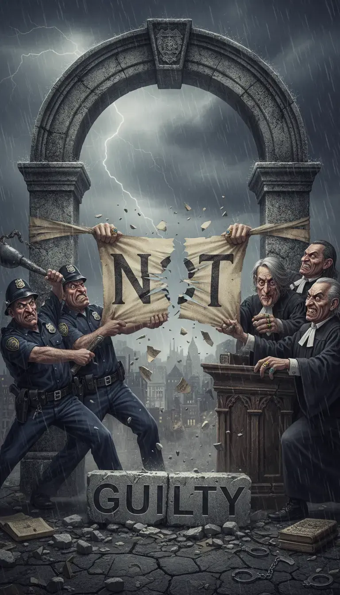

The case profile
State v. Allen identifies seven recognizable patterns in the wrongful-conviction research literature. This case is not a unique outlier and not a borderline evidentiary dispute.
This website provides population-level context for understanding why a case with this profile exists and how it survives. It does not require special cynicism or conspiracy thinking. It requires only that the documented facts be held against the documented research, and the result observed.
Measured the same way
From the opinions
"The United States Attorney is the representative not of an ordinary party to a controversy, but of a sovereignty whose obligation to govern impartially is as compelling as its obligation to govern at all; and whose interest, therefore, in a criminal prosecution is not that it shall win a case, but that justice shall be done. It is as much his duty to refrain from improper methods calculated to produce a wrongful conviction as it is to use every legitimate means to bring about a just one."
Justice George Sutherland, Majority Opinion in Berger v. United States (1935)
"The principle that a State may not knowingly use false evidence, including false testimony, to obtain a tainted conviction, implicit in any concept of ordered liberty, does not cease to apply merely because the false testimony goes only to the credibility of the witness. The jury's estimate of the truthfulness and reliability of a given witness may well be determinative of guilt or innocence, and it is upon such subtle factors as the possible interest of the witness in testifying falsely that a defendant's life or liberty may depend."
Chief Justice Earl Warren, Majority Opinion in Napue v. Illinois (1959)
"We must not pretend that the countless people who are routinely targeted by police are isolated. They are the canaries in the coal mine whose deaths, civil and literal, warn us that no one can breathe in this atmosphere… Until their voices matter too, our justice system will continue to be anything but."
Justice Sonia Sotomayor, Dissenting Opinion in Utah v. Strieff (2016)
"The requirement that a warrant not issue 'but upon probable cause, supported by Oath or affirmation,' would be reduced to a nullity if a police officer was able to use deliberately falsified allegations to demonstrate probable cause, and, having misled the magistrate, then was able to remain confident that the ploy was worthwhile."
Justice Harry Blackmun, Majority Opinion in Franks v. Delaware (1978)
"If any concept is fundamental to our American system of justice, it is that those charged with upholding the law are prohibited from deliberately fabricating evidence and framing individuals for crimes they did not commit… Actions taken in contravention of this prohibition necessarily violate due process."
Judge Bruce Selya, Limone v. Condon (1st Cir. 2004)
"Crime is contagious. If the Government becomes a lawbreaker, it breeds contempt for law; it invites every man to become a law unto himself; it invites anarchy. To declare that in the administration of the criminal law the end justifies the means—to declare that the Government may commit crimes in order to secure the conviction of a private criminal—would bring terrible retribution."
Justice Louis D. Brandeis, Dissenting Opinion in Olmstead v. United States (1928)
"There is no crueler tyranny than that which is perpetuated under the shield of law and in the name of justice."
Charles de Montesquieu, The Spirit of the Laws (1748)
"The true danger inherent in this type of police misconduct is that it subverts the factfinding process itself… The system's ability to objectively evaluate the evidence is fatally compromised when those charged with gathering it actively manipulate the outcome."
Justice William Brennan, Dissenting in Colorado v. Connelly (1986)
"The ignoble shortcut to conviction left open to the State tends to destroy the entire system of constitutional restraints on which the liberties of the people rest… Nothing can destroy a government more quickly than its failure to observe its own laws, or worse, its disregard of the charter of its own existence."
Justice Tom C. Clark, Majority Opinion in Mapp v. Ohio (1961)
"The prosecutor has more control over life, liberty, and reputation than any other person in America. His discretion is tremendous… While the prosecutor at his best is one of the most beneficent forces in our society, when he acts from malice or other base motives, he is one of the worst."
Justice Robert H. Jackson, The Federal Prosecutor (1940)
Share what you know
If you have information, documents, or firsthand knowledge relevant to State v. Benjamin Allen, submit it confidentially. Tips can directly support the record.
Leecountycorruptiontips@proton.mePress play on a track. Starting one pauses the others.

4:00
4:07
4:14
Podcast
10:31
31:30
40:02
45:03